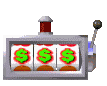
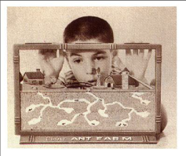
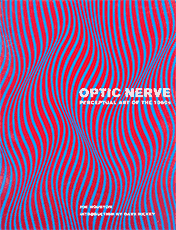
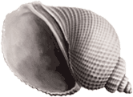
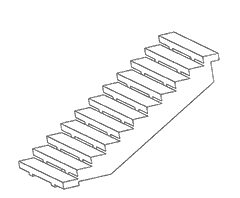
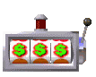
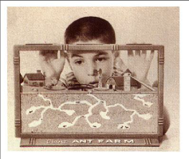
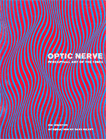
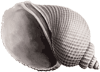
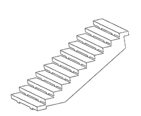

How to Cultivate the Art of Serendipity
Innovation isn’t all hard work or dumb luck: It’s about paying attention.
PAGAN KENNEDY
JAN. 2, 2016
via the New York Times
DO some people have a special talent for serendipity? And if so, why?
In 2008, an inventor named Steve Hollinger lobbed a digital camera across his studio toward a pile of pillows. “I wasn’t trying to make an invention,” he said. “I was just playing.” As his camera flew, it recorded what most of us would call a bad photo. But when Mr. Hollinger peered at that blurry image, he saw new possibilities. Soon, he was building a throwable videocamera in the shape of a baseball, equipped with gyroscopes and sensors. The Squito (as he named it) could be rolled into a crawlspace or thrown across a river — providing a record of the world from all kinds of “nonhuman” perspectives. Today, Mr. Hollinger holds six patents related to throwable cameras.
A surprising number of the conveniences of modern life were invented when someone stumbled upon a discovery or capitalized on an accident: the microwave oven, safety glass, smoke detectors, artificial sweeteners, X-ray imaging. Many blockbuster drugs of the 20th century emerged because a lab worker picked up on the “wrong” information.
While researching breakthroughs like these, I began to wonder whether we can train ourselves to become more serendipitous. How do we cultivate the art of finding what we’re not seeking?
For decades, a University of Missouri information scientist named Sanda Erdelez has been asking that question. Growing up in Croatia, she developed a passion for losing herself in piles of books and yellowed manuscripts, hoping to be surprised. Dr. Erdelez told me that Croatian has no word to capture the thrill of the unexpected discovery, so she was delighted when — after moving to the United States on a Fulbright scholarship in the 1980s — she learned the English word “serendipity.”
Today we think of serendipity as something like dumb luck. But its original meaning was very different.
In 1754, a belle-lettrist named Horace Walpole retreated to a desk in his gaudy castle in Twickenham, in southwest London, and penned a letter. Walpole had been entranced by a Persian fairy tale about three princes from the Isle of Serendip who possess superpowers of observation. In his letter, Walpole suggested that this old tale contained a crucial idea about human genius: “As their highnesses travelled, they were always making discoveries, by accident and sagacity, of things which they were not in quest of.” And he proposed a new word — “serendipity” — to describe this princely talent for detective work. At its birth, serendipity meant a skill rather than a random stroke of good fortune.
Dr. Erdelez agrees with that definition. She sees serendipity as something people do. In the mid-1990s, she began a study of about 100 people to find out how they created their own serendipity, or failed to do so.
Her qualitative data — from surveys and interviews — showed that the subjects fell into three distinct groups. Some she called “non-encounterers”; they saw through a tight focus, a kind of chink hole, and they tended to stick to their to-do lists when searching for information rather than wandering off into the margins. Other people were “occasional encounterers,” who stumbled into moments of serendipity now and then. Most interesting were the “super-encounterers,” who reported that happy surprises popped up wherever they looked. The super-encounterers loved to spend an afternoon hunting through, say, a Victorian journal on cattle breeding, in part, because they counted on finding treasures in the oddest places. In fact, they were so addicted to prospecting that they would find information for friends and colleagues.
You become a super-encounterer, according to Dr. Erdelez, in part because you believe that you are one — it helps to assume that you possess special powers of perception, like an invisible set of antennas, that will lead you to clues.
A few months ago, I was having a drink in Cambridge, Mass., with a friend, a talented journalist who was piecing together a portrait of a secretive Wall Street wizard. “But I haven’t found the real story yet; I’m still gathering string,” my friend told me, invoking an old newsroom term to describe the first stage of reporting, when you’re looking for something that you can’t yet name. Later that night, as I walked home from the bar, I realized “gathering string” is just another way of talking about super-encountering. After all, “string” is the stuff that accumulates in a journalist’s pocket. It’s the note you jot down in your car after the interview, the knickknack you notice on someone’s shelf, or the anomaly that jumps out at you in Appendix B of an otherwise boring research study.
As I navigated the brick sidewalk, passing under the pinkish glow of a streetlight, I thought about how string was probably hiding all around me. A major story might lurk behind the Harvard zoology museum ahead or in the plane soaring above. String is everywhere for the taking, if you have the talent to take it.
In the 1960s, Gay Talese, then a young reporter, declared that “New York is a city of things unnoticed” and delegated himself to be the one who noticed. Thus, he transformed the Isle of Manhattan into the Isle of Serendip: He traced the perambulations of feral cats, cataloged shoeshine purveyors, tracked down statistics related to the bathrooms at Yankee Stadium and discovered a colony of ants at the top of the Empire State Building. He published his findings in a little book titled “New York: A Serendipiter’s Journey.”
The term “serendipiter” breathed new life into Walpole’s word, turning serendipity into a protagonist and a practitioner. After all, those ants at the top of the Empire State Building didn’t find themselves; Mr. Talese had to notice them, which was no easy matter. Similarly, Dr. Erdelez came up with the term super-encounterer to give us a way to talk about the people rather than just the discoveries. Without such words, we tend to become dazzled by the happy accident itself, to think of it as something that exists independent of an observer.
We can slip into a twisted logic in which we half-believe the penicillin picked Alexander Fleming to be its emissary, or that the moons of Jupiter wanted to be seen by Galileo. But discoveries are products of the human mind.
As people dredge the unknown, they are engaging in a highly creative act. What an inventor “finds” is always an expression of him- or herself. Martin Chalfie, who won a Nobel Prize for his work connected with green fluorescent protein — the stuff that makes jellyfish glow green — told me that he and several other Nobel Prize winners benefited from a chain of accidents and chance encounters on the way to their revelations. Some scientists even embrace a kind of “free jazz” method, he said, improvising as they go along: “I’ve heard of people getting good results after accidentally dropping their experimental preparations on the floor, picking them up, and working on them nonetheless,” he added.
So how many big ideas emerge from spills, crashes, failed experiments and blind stabs? One survey of patent holders (the PatVal study of European inventors, published in 2005) found that an incredible 50 percent of patents resulted from what could be described as a serendipitous process. Thousands of survey respondents reported that their idea evolved when they were working on an unrelated project — and often when they weren’t even trying to invent anything. This is why we need to know far more about the habits that transform a mistake into a breakthrough.
IN the late 1980s, Dr. John Eng, an endocrinologist, became curious about certain animal poisons that damaged the pancreas, so he ordered lizard venom through the mail and began to play around with it. As a result of this curious exercise, he discovered a new compound in the saliva of a Gila monster, and that in turn led to a treatment for diabetes. One of Dr. Eng’s associates (quoted in a 2005 newspaper article) remarked that he was capable of seeing “patterns that others don’t see.”
Is this pattern-finding ability similar to the artistic skill of a painter like Georgia O’Keeffe? Is it related to the string-gathering prowess of Gay Talese? We still know so little about creative observation that it’s impossible to answer such questions.
That’s why we need to develop a new, interdisciplinary field — call it serendipity studies — that can help us create a taxonomy of discoveries in the chemistry lab, the newsroom, the forest, the classroom, the particle accelerator and the hospital. By observing and documenting the many different “species” of super-encounterers, we might begin to understand their minds.
A number of pioneering scholars have already begun this work, but they seem to be doing so in their own silos and without much cross-talk. In a 2005 paper (“Serendipitous Insights Involving Nonhuman Primates”), two experts from the Washington National Primate Research Center in Seattle cataloged the chance encounters that yielded new insights from creatures like the pigtail macaque. Meanwhile, the authors of a paper titled “On the Exploitation of Serendipity in Drug Discovery” puzzled over the reasons the 1950s and ’60s saw a bonanza of breakthroughs in psychiatric medication, and why that run of serendipity ended. And in yet another field of study, a few information scientists are trying to understand the effects of being bombarded on social media sites with countless tantalizing pieces of “string.”
What could these researchers discover if they came together for one big conversation?
Of course, even if we do organize the study of serendipity, it will always be a whimsical undertaking, given that the phenomenon is difficult to define, amazingly variable and hard to capture in data. The clues will no doubt emerge where we least expect them, perhaps in the fungi clinging to the walls of parking garages or the mating habits of bird-watchers. The journey will be maddening, but the potential insights could be profound: One day we might be able to stumble upon new and better ways of getting lost.


 








